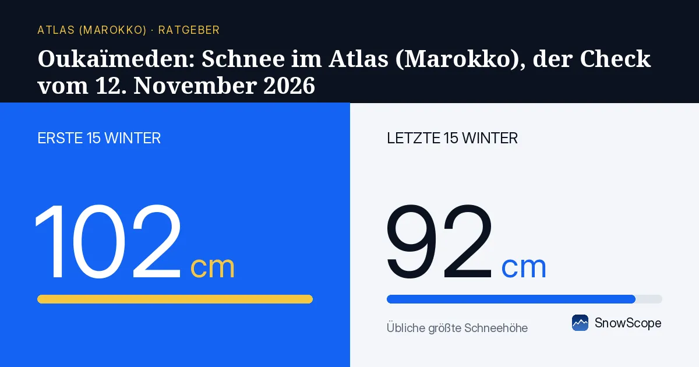
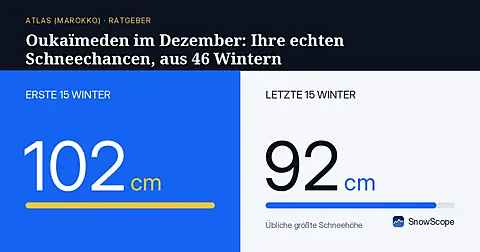

Oukaïmeden: Schnee im Atlas (Marokko), der Check vom 12. November 2026
November kommt trocken im Hohen Atlas an. SnowScope zeigt am 12. November 0 cm auf allen drei Höhenlagen von Oukaïmeden (Tal 2600 m, Mittelteil 2929 m, Gipfel 3258 m), ohne Neuschnee in der vergangenen Woche und nichts in den nächsten sieben Tagen vorhergesagt. Das ist verspätet – normalerweise setzt sich der erste Schnee hier um den 5. November – aber ein langsamer Herbststart sagt nichts über den Winter voraus.
Die Live-Schneeprognose für Oukaïmeden in der SnowScope-AppSchneehöhen, Pulverschnee-Alarme und 3D-Karte, gratis.

Drei Höhenlagen, alle schneefrei
Die Schneekarte zeigt Grau im Ourika-Tal und bis zu den hohen Gräten: 0 cm gemessen am Tal, Mittelteil und Gipfel. Die letzten 48 Stunden brachten nichts, die letzte Woche auch nicht. Die Vorhersage für die nächsten sieben Tage enthält keinen Schnee.
Null auf jeder Höhenlage lässt keinen Raum für Zweifel. Die Hänge des Toubkal und seiner Nachbarn zeigen vorerst nur Fels und Geröll.
November ist ohnehin normalerweise dünn
In den vergangenen 46 Wintern (1980–81 bis 2025–26) erreicht der erste Schnee Oukaïmeden normalerweise um den 5. November. Auch in einem typischen November ist die Tiefe gering: der Mittelwert liegt am Tal bei 2 cm, im Mittelteil bei 3 cm und an der Spitze bei 3 cm. Ein schneereicher November kann am Tal 30 bis 38 cm oder an der Spitze 38 cm bringen, aber das ist selten.
Dezember markiert die echte Verschiebung: am Tal bauen sich 16 cm auf, im Mittelteil 18 cm und an der Spitze 20 cm in einem normalen Winter.
Wenn die Schneesaison ihren Höhepunkt erreicht
März ist der tiefste Monat auf jeder Höhenlage. In einem mittleren Winter hält das Tal 46 cm, der Mittelteil liegt bei 53 cm und die Spitze erreicht 58 cm. Der mittlere Höhepunkt über alle 46 Winter hinweg liegt bei 78 cm am Tal, 92 cm im Mittelteil und 112 cm an der Spitze. Der magerste Winter stoppte bei 49 cm an der Spitze; der reichste erreichte 248 cm.
Der letzte Winter (2025–26) war großzügig: 149 Schneetage und tiefe Schneedecke überall. Die zuverlässigste Woche für 50 cm oder mehr an der Spitze ist Woche 9 (Ende Februar/Anfang März), wenn 61 Prozent der vergangenen Winter das schafften.
Welche Höhenlage die besten Chancen bietet
Die Spitze auf 3258 m hat den stärksten statistischen Fall für zuverlässigen Schnee. Über die vergangenen Winter hinweg bekommt die Spitze guten Schnee (50 cm oder mehr) in mindestens sechs Wochen der Saison; der Mittelteil hat zuverlässige Schneedecke in vier Wochen; das Tal nur in einer Woche. Höhe zählt hier.
Der Unterschied summiert sich über einen Winter. Die Spitze hat durchschnittlich 112 cm maximale Tiefe; der Mittelteil 92 cm; das Tal 78 cm. Diese Lücke vergrößert sich in mageren Jahren und verengt sich in großzügigen, aber der Gipfel hält immer den besten Schnee.

Reise nach Oukaïmeden planen
Ein trockener November ist im Atlas bemerkenswert. Schnee kommt hier in Wellen – große Stürme statt gleichmäßiger Ansammlung – also die Form einer Woche sagt wenig über den kommenden Monat. Wenn du auf Oukaïmeden fahren möchtest, ziele auf Ende Januar bis März und checke die Schneekarte eine Woche vor deiner Reise.
Die Straße von Marrakesch kann bei starkem Schneefall gesperrt werden: bestätige die Bedingungen vor Ort, bevor du abreist.
Tipps für Skifahrer
- Beobachte die Spitze auf 3258 m: sie hält Schnee am längsten und tiefsten. Wenn Tal und Mittelteil dünn sind, ist der Gipfel oft noch fahrbar.
- Speichere die Oukaïmeden-Seite und aktualisiere sie mit jedem Vorhersage-Lauf. Schnee hier kommt in großen Episoden, daher zeigen sich Änderungen schnell.
- Ende Februar bis März bietet die beste statistische Chance für tiefe Schneedecke. Wenn du flexibel sein kannst, ist das der richtige Zeitpunkt zum Buchen.
- Das Liftbetrieb und die Resort-Öffnung hängen vom Resort-Betreiber ab, nicht von der Schneatiefe auf unserer Karte.
- Winterstürme können in einem einzelnen Ereignis 20–30 cm in dieser Höhe abladen. Wenn Schnee kommt, kann er die Straße für ein oder zwei Tage sperren.
Zu diesen Zahlen
Die Schneehöhen der Skigebiete sind der meiste Schnee in den oberen Hängen am angegebenen Tag; es sind Schätzungen für eine Fläche, keine Messung an einem Punkt. Prognosen können sich ändern. Lies vor dem Freeriden immer den offiziellen Lawinenlagebericht.
Diesen Bericht zitieren
Für Forschung, Lehre oder Presse: Zahlen und Grafiken sind unter CC BY 4.0 mit dieser Quellenangabe frei nutzbar.
SnowScope (2026), Oukaïmeden: Schnee im Atlas (Marokko), der Check vom 12. November 2026, https://snowscope.app/blog/de/2026/11/oukaimeden-neige-atlas-maroc-12-novembre-2026.html, abgerufen am 2026-11-12
SnowScope (Atlas Labs). (2026, November 12). Oukaïmeden: Schnee im Atlas (Marokko), der Check vom 12. November 2026. SnowScope snow reports. https://snowscope.app/blog/de/2026/11/oukaimeden-neige-atlas-maroc-12-novembre-2026.html
BibTeX
@misc{snowscope2026oukaimedenneigeatlasmaro,
author = {{SnowScope (Atlas Labs)}},
title = {Oukaïmeden: Schnee im Atlas (Marokko), der Check vom 12. November 2026},
year = {2026},
month = nov,
howpublished = {\url{https://snowscope.app/blog/de/2026/11/oukaimeden-neige-atlas-maroc-12-novembre-2026.html}},
note = {Published 2026-11-12 07:16 UTC; accessed 2026-11-12}
}· CC BY 4.0 · Methoden, Daten und Werkzeuge →
Oukaïmeden: Schnee und Temperatur nach Höhe, dieser Winter vs letzter (Werkzeuge) →
Oukaïmeden folgen
Gratis: eine Nachricht, wenn Neuschnee kommt, und jeden Morgen die Vorhersage.
Weitere Schneeberichte

Am Skigebiet Oukaïmeden in Marokko bringt ein typischer 15. Dezember nur 16 cm in der Mittelhöhe. SnowScope zeigt Chancen aus 46 Wintern Daten.

Der Dezember bringt nur 18 cm typische Schneehöhe auf Mittelhang in Oukaimeden, gegenüber 53 cm im März. Die Frühjahrsaison ist dünn, aber möglich. Daten 13. November 2026.